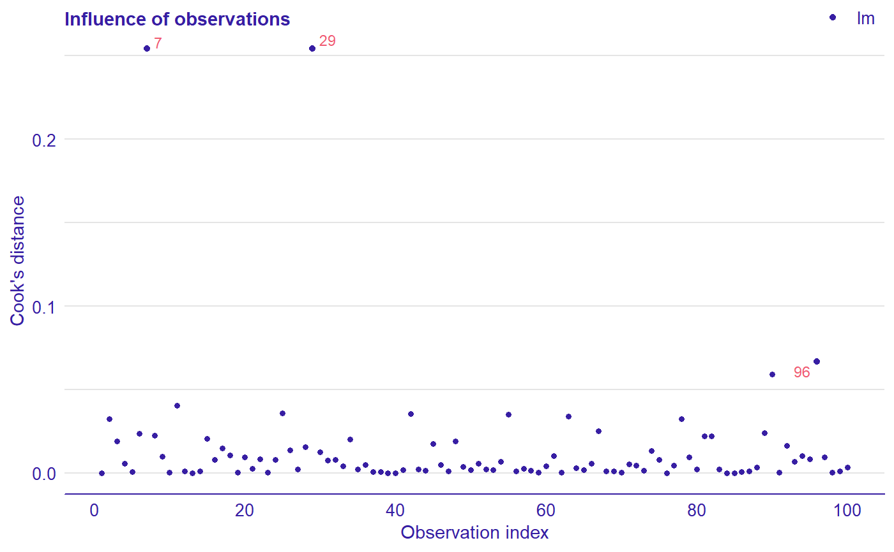

Influence of observations plot
Cook’s distances are used for estimate the influence of an single observation.
plotCooksDistance(object, ..., nlabel = 3)
Arguments
| object | An object of class ModelAudit. |
|---|---|
| ... | Other arguments passed to |
| nlabel | Number of observations with the biggest Cook's distances to be labeled. |
Details
Cook’s distance is a tool for identifying observations that may negatively affect the model. They may be also used for indicating regions of the design space where it would be good to obtain more observations. Data points indicated by Cook’s distances are worth checking for validity.
Cook’s Distances are calculated by removing the i-th observation from the data and recalculating the model. It shows how much all the values in the model change when the i-th observation is removed.
For model classes other than lm and glm the distances are computed directly from the definition.
Examples
dragons <- DALEX::dragons[1:100, ] lm_model <- lm(life_length ~ ., data = dragons) lm_au <- audit(lm_model, data = dragons, y = dragons$life_length) plotCooksDistance(lm_au)